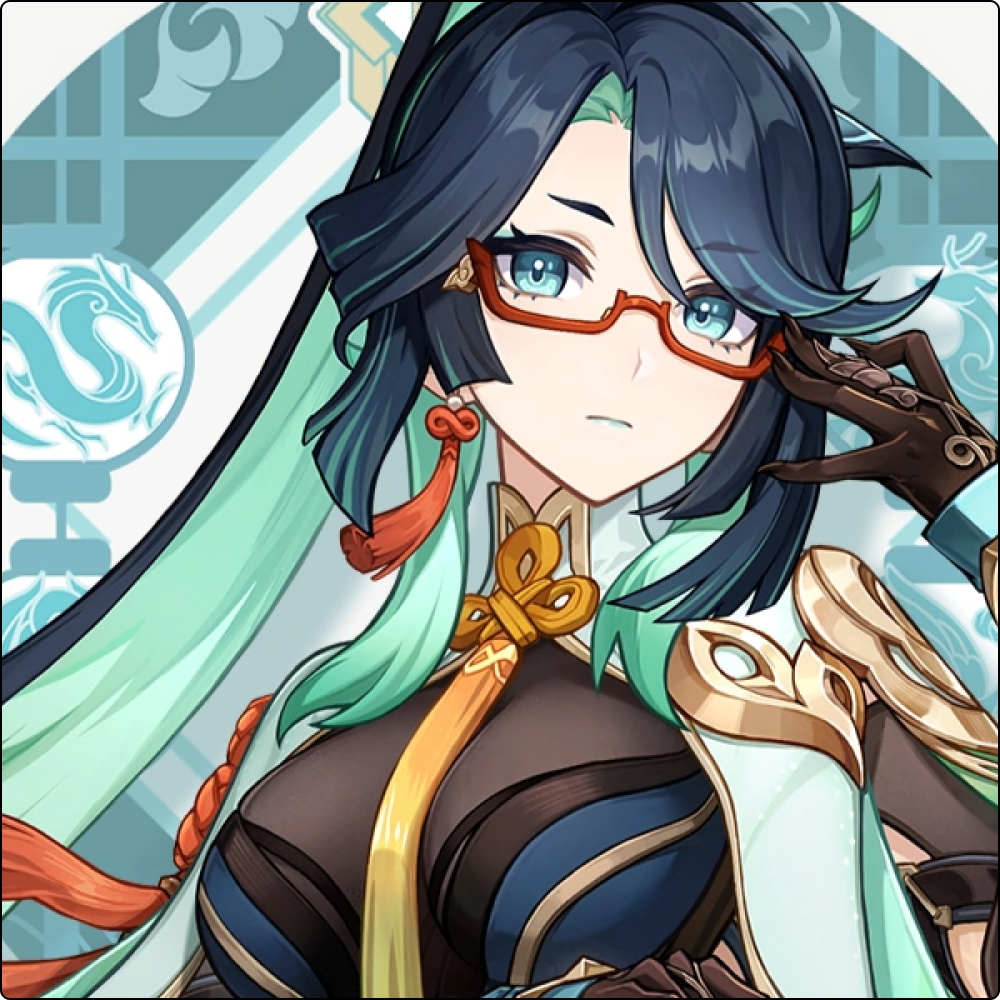

Xianyun
Liyue
Element: Anemo
Weapon: Catalyst
Rarity:
Xianyun (Chinese: 闲云 Xiányún), also known by her adeptus name Cloud Retainer, is a playable Anemo Character in Genshin Impact.
As an adeptus, Xianyun is devoted to protecting Liyue from external threats and sees Morax in high regard; when she learned of his apparent demise, she flew into a fury and threatened to destroy Liyue Harbor for their crimes, only for the Traveler to placate her by reminding her of her duties. She also has a habit of speaking formally, often addressing herself as "one". In the past, she was revered as a decisive and bold figure, while she was also known by her fellow adepti as solemn and taciturn, rarely speaking outside of activating sigils during battle.
Having lived for thousands of years, Xianyun was good friends with Guizhong and shared a similar like of mechanics; following her death in the Archon War, she modified the Guizhong Ballista to honor her memory. She is competitive and prideful, generally starting competitions over fairly trivial matters, such as cooking and racing. She also shows a caring side to her disciples; she made a special pinwheel device for Ganyu after noticing she was interested in some being sold at a stall, and was pleased to see her enjoy it. When she is with Ganyu, she generally has a habit of reminiscing about her past, much to Ganyu's embarrassment. Likewise, she was curious about how Shenhe was doing in human society and was pleased to she had no issues.
Xianyun is a tall woman with long, navy hair that has light blue undertones. Her hair is tied in a high ponytail secured with a hairpin that resembles the sharpness of a crane. She has shorter eyebrows and wears red glasses. Although Xianyun seems to take the form of a human, she has taloned fingers, like the claws of a crane. Her outfit is flowy and dress-like with many white, greens, blues, and yellows, and she adorns many pendants. She wears high heels and seems to be fond of accessories.
In her crane form, she is taller than many humans and is white with blue, gold, and black plumage. Under her eyes are red markings.